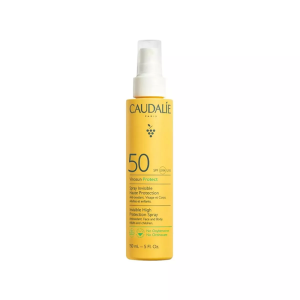

Invisible High Protection Spray SPF 50 ofron mbrojtjen maksimale nga UVA / UVB për lëkurën, gjithashtu ofron nxirje natyrale, rrezatuese, që zgjat në kohë duke ruajtur pamjen e saj rinore. Mbrojtje 2-në-1 për trupin dhe fytyrën. Pasuruar me ujë organik të rrushit, tekstura e lehtë e qumështit,jo vajore, hidraton dhe qetëson lëkurën e ndjeshme. Aroma e saj verore në mënyrë delikate mbështjell lëkurën në shënimet e luleve frangipani. Mbron nga shenjat e plakjes Hidraton dhe qetëson Rezistente ndaj ujit Respekton ekosistemet detare Udhëzime mbi përdorimin Vendosni një sasi të mjaftueshme përpara ekspozimit në diell, riaplikojeni përsëri çdo 2 orë dhe pas notit. Shmangni zonën e konturit të syve.